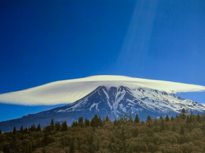
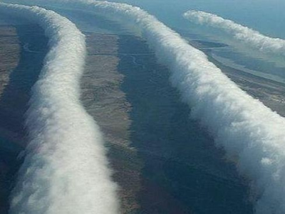

Marvelous Feats of Nature
Sometimes we, as humans, need to be humbled. So God thought "I know, I'll just occasionally really weird them out." All joking aside though, the world does do the most perplexing things. Sometimes it is a spectacular celestial display, and sometimes it is something only noticed by those who devote their life to witnessing that one anomaly. A lot of the things on this list are still yet to be fully understood, but that doesn't mean we can't appreciate them.
Clouds

